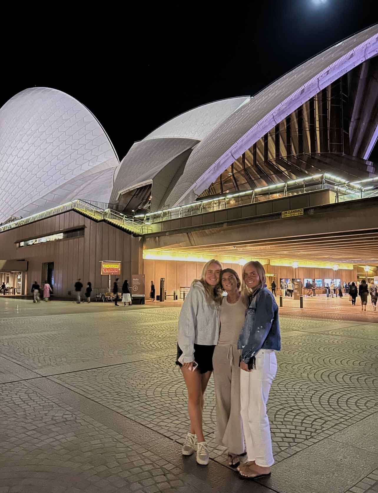
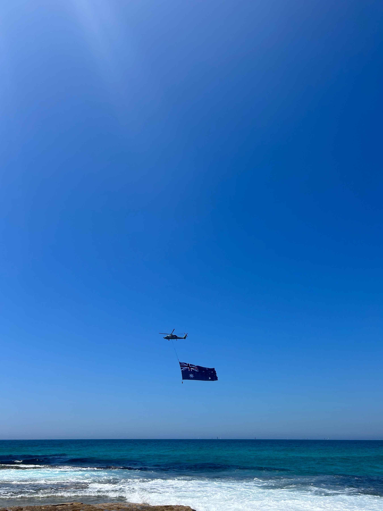

Studying abroad in Australia? I have you covered. I am here to tell you that you just made one of the best decisions of your life by choosing arguable the most perfect place on this planet and a great place to study. Beaches, cities, nature, animals, and amazing food, this place really has it all. With an area of 2.968 million mi^2, this place comes close to rivaling the size of the United States. With various terrain, weather, and cities, where is the best place to visit and when? I have you covered and am here to give all of my recommendations to make your study abroad experience one to remember.
My Favorites around Sydney!
Bondi: Sydney’s main/most popular beach that I absolutely fell in love with it. The perfect beach to grab a bite at, shop, or hit the surf! A must go.
Fishbowl: A really good Poke place right on the main strip in Bondi.
Raw Bar: A great Sushi place in North Bondi. It gets really crowded so you definitely want to go at an off time or get takeout.
Orchard Street: A completely vegan and gf coffee shop in North Bondi. Absolutely loved this place. Get an almond milk latte and a muffin or banana bread.
Wellington Bake Shop: A bakery and gelato spot on Bondi Road. This place had pretty good bagels. (Nothing like NYC but pretty good for Australia)
Anita: A good gelato place. They have them all over Sydney so avoid the Bondi one if at all possible because it is so crowded.
Gelato Messina: An even better gelato place in my opinion. Right off the main beach on Hall Street.
Cali Press: Easy acai bowls, sandwiches, and grain bowls all over Sydney.
Health Emporium: A health grocery store with the absolute BEST JUICES in Sydney.
Char Rotisserie: A healthy to go restaurant on Bondi Road. Good place to stop on your way back from the beach and get dinner. Get ¼ of a chicken with a Greek salad. It is so yummy!
The Depot: Great, classic brunch in North Bondi.
Blessed Bowls Bondi: Favorite açai bowl place in Sydney right on Bondi Road. Get one with passion fruit in it!
Fruitologist: Juices, acai bowls, specialty groceries, and so much more. This is a health food grocery store on Bondi Road
Sonoma Bakery: Amazing bakery/coffee place in Bondi. GO! And the food is so good, specifically the avocado toast.
Bennett St Dairy: Best chocolate chip cookie in Sydney.
Bare Naked Bowls: My second favorite açaí bowl place in Sydney. This place has so many different options and great smoothies. Skip all the name brand places and come here instead. It is a must.
Totti’s: This place is a must. It is tucked behind this rundown hotel but in the back it is beautiful.
Bondi Junction: Bondi Junction connects the beaches, like Bondi beach, to downtown Sydney. The main public transportation hub is here right next to the mall.
Hudson’s Bakery: An entirely gluten free bakery!! They have bagels, muffins, pizza, sandwiches, crisps, banana bread, etc.
Ruby’s Diner: Diner on the outskirts of Bondi Junction. Just an easy and good basic brunch.
CBD (Central Business District): Downtown Sydney

Pancakes on The Rocks: Late night pancake place by the Sydney Opera House. So fun to go to for late night food.
Uncle Ming’s Bar: One of my favorite restaurants in Sydney! They only serves dumplings but they were the best dumplings I have ever had. It is almost like a speakeasy because it was so hard to find but the vibes were like a dark red aesthetic which was so cool.
Ms. Gs: We went here with our parents in Kings Cross. The vibe of the restaurant is so cool, and they play fun music.
Sydney Opera House Bar/Restaurant: A bar and restaurant right below the Sydney Opera House. The views are incredible, and it was the perfect to hang out for a while. Make sure to go at an off hour because it is always packed, and you can’t make a reservation. (We went at 5:30 on a Wednesday and could barely find a seat)
Spice Alley: A long hidden alley outside of Surry Hills with a huge range of Asian food vendors all in the same spot. The vibes here are so cool and fun. If you like Asian food, you will love this place.
Coogee:A pretty beach down the coast from Bondi. This is a popular beach for UNSW students to go to.
Coogee Beach Hotel: A mix between a dinner spot and an outside bar. I would recommend going for drinks and then heading outside to the bar.
Melon Head: This was my favorite acai bowl in Sydney!
Maloneys Grocer: Specialty/health grocery store right up the road from Coogee. A great place to do selective specialty grocery shopping after going to Coles or Woolworths.
Bake Bar: Cute little breakfast spot on the way to Coogee in Randwick. It was always so crowded and had good breakfast sandwiches.
Tamarama: This was probably my favorite beach in Sydney. It is basically a smaller, less crowded, and prettier quaint beach in between Bondi and Bronte. Surfers, good vibes, and it is usually empty. Go!
The cafe behind the beach is also really good. Get an acai bowl and a smoothie/juice.
Bronte:A beautiful beach town that is one beach down from Tamarama Beach.

Iggy’s Bakery: one of the best bakeries in Sydney. Right up the street from Bronte beach. Great sourdough, croissants, and most importantly AMAZING BAGELS. Most brunch places use this place's bread so that tells you how good it is.
Orchard Street: Same place as in Bondi, just a smaller version.
Paddington:A quiant suburb of Sydney's CBD. Amazing restaurants and small boutiques.
Fred’s: An amazing farm to table restaurant in Sydney. It is on Oxford St in Paddington. We went with our parents and did a set menu for 9 and you practically get to eat in the kitchen which is so cool. Also, make a reservation early because it is hard to get a table.
The Paddington: Same owner as Fred’s. Has a more relaxed feel than Fred’s but still a nice restaurant with great food. Really good rotisserie chicken with a fun vibe.
Brigade Bar: A 5 floor bar with a rooftop on the top floor. Live sport, good drinks, and is very spacious. Good place to go before a rugby or AFL game.
Surry Hills: If you are into coffee and cafes, come to Surry Hills. There are amazing coffee shops and cafes on every street corner. We did a self-guided coffee tour and it was so fun.
Paramount Coffee Project: A good brunch spot/coffee. Make sure to get the avocado toast and a latte. Also, this is a great place to sit and get work done.
Single O Cafe: Amazing authentic coffee and cafe. A must go. They have 4 different coffees on tap and there are just great vibes.
Wilson Coffee: Cute whole in the wall coffee shop right across from Crown St. The iced latte was very good.
Four Ate Five: Cute brunch and coffee shop on Crown St.
Bills- Most perfect brunch spot. We went to the one in Surry Hills and in Darlinghurst, but they are all over the city. Aesthetically pleasing and amazing food. A must go brunch spot. (Get ricotta pancakes)
Dead Ringer: Probably my favorite restaurant in Sydney. The food is amazing, and the vibes are immaculate. A perfect place to take parents because it is sort of on the pricier side. (Get the Passionfruit Maid drink, the creamed almonds with toasted sourdough, and the salted sticky date pudding)